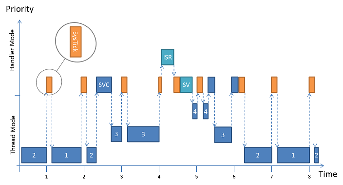
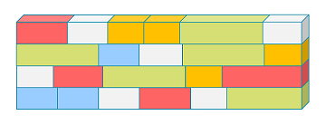

Many aspects of the kernel are configurable and the configuration options are mentioned where applicable.
System Startup
Since main is no longer a thread RTX5 does not interfere with the system startup until main is reached. Once the execution reaches main() there is a recommended order to initialize the hardware and start the kernel. This is also reflected in the user code template file "CMSIS-RTOS2 'main' function" supplied with the RTX5 component.
Your application's main() should implement at least the following in the given order:
- Initialization and configuration of hardware including peripherals, memory, pins, clocks and the interrupt system.
- Update the system core clock using the respective CMSIS-Core (Cortex-M) or CMSIS-Core (Cortex-A) function.
- Initialize the CMSIS-RTOS kernel using osKernelInitialize.
- Optionally, create a new thread
app_main, which is used as a main thread using osThreadNew. Alternatively, threads can be created in main() directly.
- Start the RTOS scheduler using osKernelStart which also configure system tick timer and RTOS specific interrupts. This function does not return in case of successful execution. Any application code after osKernelStart will therefore not be executed.
- Note
- Interrupts are initialized in osKernelStart. Modifying basic In case priorities and groupings in the NVIC are altered by the application after the above sequence it might be necessary to call osKernelInitialize again. Incorrect ossibly catched by osRtxErrorNotify or causing a hard fault.
-
The tick timer is configured during osKernelStart.
Scheduler
RTX5 implements a low-latency preemptive scheduler. Major parts of RTX5 are executed in handler mode such as
In order to be low-latency with respect to ISR execution those system exceptions are configured to use the lowest priority groups available. The priorities are configured such that no preemption happens between them. Thus no interrupt critical sections (i.e. interrupt locks) are needed to protect the scheduler.

Thread scheduling and interrupt execution
The scheduler combines priority and round-robin based context switches. The example depicted in the image above contains four threads (1, 2, 3, and 4). Threads 1 and 2 share the same priority, thread 3 has a higher one and thread 4 the highest (osThreadAttr_t::priority). As long as threads 3 and 4 are blocked the scheduler switches between thread 1 and 2 on a time-slice basis (round-robin). The time-slice for round-robin scheduling can be configured, see Round-Robin Timeout in System Configuration.
Thread 2 unblocks thread 3 by an arbitrary RTOS-call (executed in SVC handler mode) at time index 2. The scheduler switches to thread 3 immediately because thread 3 has the highest priority. Thread 4 is still blocked.
At time index 4 an interrupt (ISR) occurs and preempts the SysTick_Handler. RTX does not add any latency to the interrupt service execution. The ISR routine uses an RTOS-call that unblocks thread 4. Instead of switching to thread 4 immediately the PendSV flag is set to defer the context switching. The PendSV_Handler is executed right after the SysTick_Handler returns and the deferred context switch to thread 4 is carried out. As soon as highest priority thread 4 blocks again by using a blocking RTOS-call execution is switched back to thread 3 immediately during time index 5.
At time index 5 thread 3 uses a blocking RTOS-call as well. Thus the scheduler switches back to thread 2 for time index 6. At time index 7 the scheduler uses the round-robin mechanism to switch to thread 1 and so on.
Memory Allocation
RTX5 objects (thread, mutex, semaphore, timer, message queue, thread and event flags, as well as memory pool) require dedicated RAM memory. Objects can be created using osObjectNew() calls and deleted using osObjectDelete() calls. The related object memory needs to be available during the lifetime of the object.
RTX5 offers three different memory allocation methods for objects:
- Global Memory Pool uses a single global memory pool for all objects. It is easy to configure, but may have the disadvantage for memory fragmentation when objects with different sizes are created and destroyed.
- Object-specific Memory Pools uses a fixed-size memory pool for each object type. The method is time deterministic and avoids memory fragmentation.
- Static Object Memory reserves memory during compile time and completely avoids that a system can be out of memory. This is typically a required for some safety critical systems.
It possible to intermix all the memory allocation methods in the same application.
Global Memory Pool
The global memory pool allocates all objects from a memory area. This method of memory allocation is the default configuration setting of RTX5.

Global Memory Pool for all objects
When the memory pool does not provide sufficient memory, the creation of the object fails and the related osObjectNew() function returns NULL.
Enabled in System Configuration.
Object-specific Memory Pools
Object-specific memory pools avoids memory fragmentation with a dedicated fixed-size memory management for each object type. This type of memory pools are fully time deterministic, which means that object creation and destruction takes always the same fixed amount of time. As a fixed-size memory pool is specific to an object type, the handling of out-of-memory situations is simplified.

One memory pool per object type
Object-specific memory pools are selectively enabled for each object type, e.g: mutex or thread using the RTX configuration file:
When the memory pool does not provide sufficient memory, the creation of the object fails and the related osObjectNew() function returns NULL.
Static Object Memory
In contrast to the dynamic memory allocations, the static memory allocation requires compile-time allocation of object memory.

Statically allocated memory for all objects
Static memory allocation can be achieved by providing user-defined memory using attributes at object creation, see Manual User-defined Allocation. Please take special note of the following restrictions:
In order to allow RTX5 aware debugging, i.e. Component Viewer, to recognize control blocks these needs to be placed in individual memory sections, i.e. using __attribute__((section(...))).
| RTX Object | Linker Section |
| Thread | .bss.os.thread.cb |
| Timer | .bss.os.timer.cb |
| Event Flags | .bss.os.evflags.cb |
| Mutex | .bss.os.mutex.cb |
| Semaphore | .bss.os.semaphore.cb |
| Memory Pool | .bss.os.mempool.cb |
| Message Queue | .bss.os.msgqueue.cb |
The following code example shows how to create an OS object using static memory.
Code Example:
#include "RTE_Components.h"
#include CMSIS_device_header
void worker(void *arg)
{
while(1)
{
}
}
__attribute__((section(".bss.os.thread.cb")))
uint64_t worker_thread_stk_1[64];
"wrk1",
&worker_thread_tcb_1,
sizeof(worker_thread_tcb_1),
&worker_thread_stk_1[0],
sizeof(worker_thread_stk_1),
0
};
void app_main (void *argument) {
uint32_t param = NULL;
for (;;) {}
}
int main (void) {
SystemCoreClockUpdate();
for (;;) {}
}
Thread Stack Management
For Cortex-M processors without floating point unit the thread context requires 64 bytes on the local stack.
- Note
- For Cortex-M4/M7 with FP the thread context requires 200 bytes on the local stack. For these devices the default stack space should be increased to a minimum of 300 bytes.
Each thread is provided with a separate stack that holds the thread context and stack space for automatic variables and return addresses for function call nesting. The stack sizes of RTX threads are flexibly configurable as explained in the section Thread Configuration. RTX offers a configurable checking for stack overflows and stack utilization.
Low-Power Operation
The system thread osRtxIdleThread can be use to switch the system into a low-power mode. The easiest form to enter a low-power mode is the execution of the __WFE function that puts the processor into a sleep mode where it waits for an event.
Code Example:
#include "RTE_Components.h"
#include CMSIS_device_header
for (;;) {
__WFE();
}
}
- Note
__WFE() is not available in every Cortex-M implementation. Check device manuals for availability.
RTX Kernel Timer Tick
RTX uses the generic OS Tick API to configure and control its periodic Kernel Tick.
To use an alternative timer as the Kernel Tick Timer one simply needs to implement a custom version of the OS Tick API.
- Note
- The OS Tick implementation provided must asure that the used timer interrupt uses the same (low) priority group as the service interrupts, i.e. interrupts used by RTX must not preempt each other. Refer to the Scheduler section for more details.
Tick-less Low-Power Operation
RTX5 provides extension for tick-less operation which is useful for applications that use extensively low-power modes where the SysTick timer is also disabled. To provide a time-tick in such power-saving modes, a wake-up timer is used to derive timer intervals. The CMSIS-RTOS2 functions osKernelSuspend and osKernelResume control the tick-less operation.
Using this functions allows the RTX5 thread scheduler to stop the periodic kernel tick interrupt. When all active threads are suspended, the system enters power-down and calculates how long it can stay in this power-down mode. In the power-down mode the processor and peripherals can be switched off. Only a wake-up timer must remain powered, because this timer is responsible to wake-up the system after the power-down period expires.
The tick-less operation is controlled from the osRtxIdleThread thread. The wake-up timeout value is set before the system enters the power-down mode. The function osKernelSuspend calculates the wake-up timeout measured in RTX Timer Ticks; this value is used to setup the wake-up timer that runs during the power-down mode of the system.
Once the system resumes operation (either by a wake-up time out or other interrupts) the RTX5 thread scheduler is started with the function osKernelResume. The parameter sleep_time specifies the time (in RTX Timer Ticks) that the system was in power-down mode.
Code Example:
#include "msp.h"
static void MSP432_LP_Entry(void) {
PCM->CTL1 = PCM_CTL1_KEY_VAL | PCM_CTL1_FORCE_LPM_ENTRY;
SYSCTL->SRAM_BANKRET |= SYSCTL_SRAM_BANKRET_BNK7_RET;
__enable_interrupt();
NVIC_EnableIRQ(RTC_C_IRQn);
SCB->SCR |= SCB_SCR_SLEEPONEXIT_Msk;
SCB->SCR |= (SCB_SCR_SLEEPDEEP_Msk);
}
static volatile unsigned int tc;
static volatile unsigned int tc_wakeup;
void RTC_C_IRQHandler(void)
{
if (tc++ > tc_wakeup)
{
SCB->SCR &= ~SCB_SCR_SLEEPONEXIT_Msk;
NVIC_DisableIRQ(RTC_C_IRQn);
NVIC_ClearPendingIRQ(RTC_C_IRQn);
return;
}
if (RTC_C->PS0CTL & RTC_C_PS0CTL_RT0PSIFG)
{
RTC_C->CTL0 = RTC_C_KEY_VAL;
RTC_C->PS0CTL &= ~RTC_C_PS0CTL_RT0PSIFG;
RTC_C->CTL0 = 0;
SCB->SCR |= (SCB_SCR_SLEEPDEEP_Msk);
}
}
uint32_t g_enable_sleep = 0;
for (;;) {
if (tc_wakeup > 0) {
tc = 0;
MSP432_LP_Entry();
__WFE();
}
}
}
- Note
__WFE() is not available in every Arm Cortex-M implementation. Check device manuals for availability. The alternative using __WFI() has other issues, please take note of http://www.keil.com/support/docs/3591.htm as well.
RTX5 Header File
Every implementation of the CMSIS-RTOS2 API can bring its own additional features. RTX5 adds a couple of functions for the idle more, for error notifications, and special system timer functions. It also is using macros for control block and memory sizes.
If you require some of the RTX specific functions in your application code, #include the header file rtx_os.h:
#ifndef RTX_OS_H_
#define RTX_OS_H_
#include <stdint.h>
#include <stddef.h>
#ifdef __cplusplus
extern "C"
{
#endif
#define osRtxVersionAPI 20010003
#define osRtxVersionKernel 50040000
#define osRtxKernelId "RTX V5.4.0"
#define osRtxIdInvalid 0x00U
#define osRtxIdThread 0x01U
#define osRtxIdTimer 0x02U
#define osRtxIdEventFlags 0x03U
#define osRtxIdMutex 0x04U
#define osRtxIdSemaphore 0x05U
#define osRtxIdMemoryPool 0x06U
#define osRtxIdMessage 0x07U
#define osRtxIdMessageQueue 0x08U
#define osRtxFlagSystemObject 0x01U
#define osRtxFlagSystemMemory 0x02U
#define osRtxKernelInactive ((uint8_t)osKernelInactive)
#define osRtxKernelReady ((uint8_t)osKernelReady)
#define osRtxKernelRunning ((uint8_t)osKernelRunning)
#define osRtxKernelLocked ((uint8_t)osKernelLocked)
#define osRtxKernelSuspended ((uint8_t)osKernelSuspended)
#define osRtxThreadStateMask 0x0FU
#define osRtxThreadInactive ((uint8_t)osThreadInactive)
#define osRtxThreadReady ((uint8_t)osThreadReady)
#define osRtxThreadRunning ((uint8_t)osThreadRunning)
#define osRtxThreadBlocked ((uint8_t)osThreadBlocked)
#define osRtxThreadTerminated ((uint8_t)osThreadTerminated)
#define osRtxThreadWaitingDelay ((uint8_t)(osRtxThreadBlocked | 0x10U))
#define osRtxThreadWaitingJoin ((uint8_t)(osRtxThreadBlocked | 0x20U))
#define osRtxThreadWaitingThreadFlags ((uint8_t)(osRtxThreadBlocked | 0x30U))
#define osRtxThreadWaitingEventFlags ((uint8_t)(osRtxThreadBlocked | 0x40U))
#define osRtxThreadWaitingMutex ((uint8_t)(osRtxThreadBlocked | 0x50U))
#define osRtxThreadWaitingSemaphore ((uint8_t)(osRtxThreadBlocked | 0x60U))
#define osRtxThreadWaitingMemoryPool ((uint8_t)(osRtxThreadBlocked | 0x70U))
#define osRtxThreadWaitingMessageGet ((uint8_t)(osRtxThreadBlocked | 0x80U))
#define osRtxThreadWaitingMessagePut ((uint8_t)(osRtxThreadBlocked | 0x90U))
#define osRtxThreadFlagDefStack 0x10U
#define osRtxStackMagicWord 0xE25A2EA5U
#define osRtxStackFillPattern 0xCCCCCCCCU
typedef struct osRtxThread_s {
uint8_t id;
uint8_t state;
uint8_t flags;
uint8_t attr;
const char *name;
struct osRtxThread_s *thread_next;
struct osRtxThread_s *thread_prev;
struct osRtxThread_s *delay_next;
struct osRtxThread_s *delay_prev;
struct osRtxThread_s *thread_join;
uint32_t delay;
int8_t priority;
int8_t priority_base;
uint8_t stack_frame;
uint8_t flags_options;
uint32_t wait_flags;
uint32_t thread_flags;
struct osRtxMutex_s *mutex_list;
void *stack_mem;
uint32_t stack_size;
uint32_t sp;
uint32_t thread_addr;
uint32_t tz_memory;
#ifdef RTX_TF_M_EXTENSION
uint32_t tz_module;
#endif
#define osRtxTimerInactive 0x00U
#define osRtxTimerStopped 0x01U
#define osRtxTimerRunning 0x02U
#define osRtxTimerPeriodic ((uint8_t)osTimerPeriodic)
typedef struct {
void *arg;
typedef struct osRtxTimer_s {
uint8_t id;
uint8_t state;
uint8_t flags;
uint8_t type;
const char *name;
struct osRtxTimer_s *prev;
struct osRtxTimer_s *next;
uint32_t tick;
uint32_t load;
typedef struct {
uint8_t id;
uint8_t reserved_state;
uint8_t flags;
uint8_t reserved;
const char *name;
uint32_t event_flags;
typedef struct osRtxMutex_s {
uint8_t id;
uint8_t reserved_state;
uint8_t flags;
uint8_t attr;
const char *name;
struct osRtxMutex_s *owner_prev;
struct osRtxMutex_s *owner_next;
uint8_t lock;
uint8_t padding[3];
typedef struct {
uint8_t id;
uint8_t reserved_state;
uint8_t flags;
uint8_t reserved;
const char *name;
uint16_t tokens;
uint16_t max_tokens;
typedef struct {
uint32_t max_blocks;
uint32_t used_blocks;
uint32_t block_size;
void *block_base;
void *block_lim;
void *block_free;
typedef struct {
uint8_t id;
uint8_t reserved_state;
uint8_t flags;
uint8_t reserved;
const char *name;
typedef struct osRtxMessage_s {
uint8_t id;
uint8_t reserved_state;
uint8_t flags;
uint8_t priority;
struct osRtxMessage_s *prev;
struct osRtxMessage_s *next;
typedef struct {
uint8_t id;
uint8_t reserved_state;
uint8_t flags;
uint8_t reserved;
const char *name;
uint32_t msg_size;
uint32_t msg_count;
typedef struct {
uint8_t id;
uint8_t state;
uint8_t flags;
uint8_t reserved;
const char *name;
typedef struct {
const char *os_id;
uint32_t version;
struct {
uint8_t state;
volatile uint8_t blocked;
uint8_t pendSV;
uint8_t reserved;
uint32_t tick;
} kernel;
int32_t tick_irqn;
struct {
struct {
} run;
struct {
uint32_t tick;
uint32_t timeout;
} robin;
} thread;
struct {
void (*tick)(void);
} timer;
struct {
uint16_t max;
uint16_t cnt;
uint16_t in;
uint16_t out;
void **data;
} isr_queue;
struct {
} post_process;
struct {
void *stack;
void *mp_data;
void *mq_data;
void *common;
} mem;
struct {
} mpi;
typedef struct {
uint32_t cnt_alloc;
uint32_t cnt_free;
uint32_t max_used;
#define osRtxThreadFlagsLimit 31U
#define osRtxEventFlagsLimit 31U
#define osRtxMutexLockLimit 255U
#define osRtxSemaphoreTokenLimit 65535U
#define osRtxThreadCbSize sizeof(osRtxThread_t)
#define osRtxTimerCbSize sizeof(osRtxTimer_t)
#define osRtxEventFlagsCbSize sizeof(osRtxEventFlags_t)
#define osRtxMutexCbSize sizeof(osRtxMutex_t)
#define osRtxSemaphoreCbSize sizeof(osRtxSemaphore_t)
#define osRtxMemoryPoolCbSize sizeof(osRtxMemoryPool_t)
#define osRtxMessageQueueCbSize sizeof(osRtxMessageQueue_t)
#define osRtxMemoryPoolMemSize(block_count, block_size) \
(4*(block_count)*(((block_size)+3)/4))
#define osRtxMessageQueueMemSize(msg_count, msg_size) \
(4*(msg_count)*(3+(((msg_size)+3)/4)))
#define osRtxErrorStackUnderflow 1U
#define osRtxErrorISRQueueOverflow 2U
#define osRtxErrorTimerQueueOverflow 3U
#define osRtxErrorClibSpace 4U
#define osRtxErrorClibMutex 5U
#ifdef RTX_TF_M_EXTENSION
extern uint32_t osRtxTzGetModuleId (void);
#endif
#define osRtxConfigPrivilegedMode (1UL<<0)
#define osRtxConfigStackCheck (1UL<<1)
#define osRtxConfigStackWatermark (1UL<<2)
typedef struct {
uint32_t flags;
uint32_t tick_freq;
uint32_t robin_timeout;
struct {
void **data;
uint16_t max;
uint16_t padding;
} isr_queue;
struct {
void *stack_addr;
uint32_t stack_size;
void *mp_data_addr;
uint32_t mp_data_size;
void *mq_data_addr;
uint32_t mq_data_size;
void *common_addr;
uint32_t common_size;
} mem;
struct {
} mpi;
uint32_t thread_stack_size;
const
const
const
uint32_t timer_mq_mcnt;
#ifdef __cplusplus
}
#endif
#endif // RTX_OS_H_
Timeout Value
Timeout values are an argument to several osXxx functions to allow time for resolving a request. A timeout value of 0 means that the RTOS does not wait and the function returns instantly, even when no resource is available. A timeout value of osWaitForever means that the RTOS waits infinitely until a resource becomes available. Or one forces the thread to resume using osThreadResume which is discouraged.
The timeout value specifies the number of timer ticks until the time delay elapses. The value is an upper bound and depends on the actual time elapsed since the last timer tick.
Examples:
- timeout value 0 : the system does not wait, even when no resource is available the RTOS function returns instantly.
- timeout value 1 : the system waits until the next timer tick occurs; depending on the previous timer tick, it may be a very short wait time.
- timeout value 2 : actual wait time is between 1 and 2 timer ticks.
- timeout value osWaitForever : system waits infinite until a resource becomes available.

Example of timeout using osDelay()
Calls from Interrupt Service Routines
The following CMSIS-RTOS2 functions can be called from threads and Interrupt Service Routines (ISR):
- osKernelGetInfo, osKernelGetState, osKernelGetTickCount, osKernelGetTickFreq, osKernelGetSysTimerCount, osKernelGetSysTimerFreq
- osThreadGetId, osThreadFlagsSet
- osEventFlagsSet, osEventFlagsClear, osEventFlagsGet, osEventFlagsWait
- osSemaphoreAcquire, osSemaphoreRelease, osSemaphoreGetCount
- osMemoryPoolAlloc, osMemoryPoolFree, osMemoryPoolGetCapacity, osMemoryPoolGetBlockSize, osMemoryPoolGetCount, osMemoryPoolGetSpace
- osMessageQueuePut, osMessageQueueGet, osMessageQueueGetCapacity, osMessageQueueGetMsgSize, osMessageQueueGetCount, osMessageQueueGetSpace
Functions that cannot be called from an ISR are verifying the interrupt status and return the status code osErrorISR, in case they are called from an ISR context. In some implementations, this condition might be caught using the HARD_FAULT vector.